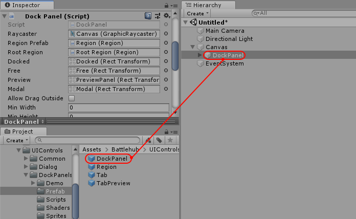
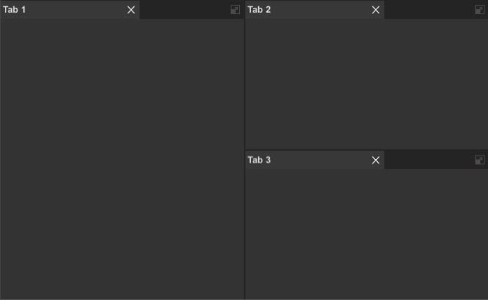

Dock Panel Docs
Overview
The Dock Panel is a control, that provides an easy docking of content regions to the left, right, top, bottom or center of the panel. The control also allow region to become an independent floating window, modal popup or dialog.

##Getting Started
- Create Canvas.
- Add DockPanel.prefab from Assets/Battlehub/RTEditor/Content/Runtime/UIControls/DockPanels/Prefabs to hierarchy.
- Create GettingStarted.cs script and add it to DockPanel Game Object.
- Hit Play.

using Battlehub.UIControls.DockPanels;
using UnityEngine;
using UnityEngine.UI;
public class GettingStarted : MonoBehaviour
{
DockPanel m_dockPanel;
void Start()
{
m_dockPanel = GetComponent<DockPanel>();
GameObject testContent = new GameObject();
testContent.AddComponent<Image>().color = new Color(0.2f, 0.2f, 0.2f, 1.0f);
LayoutInfo layout = new LayoutInfo(false,
new LayoutInfo(testContent.transform, "Tab 1"),
new LayoutInfo(
isVertical: true,
child0: new LayoutInfo(Instantiate(testContent).transform, "Tab 2"),
child1: new LayoutInfo(Instantiate(testContent).transform, "Tab 3"),
ratio: 0.5f),
0.5f);
m_dockPanel.RootRegion.Build(layout);
}
}

Note
Full demo can be found in Assets/Battlehub/RTEditorDemo/Content/Runtime/UIControls/DockPanels folder
##Dock Panel
Structure:

Prefab: /Battlehub/RTEditor/Content/Runtime/UIControls/DockPanels/Prefabs/DockPanel.prefab
Script: /Battlehub/RTEditor/Runtime/UIControls/DockPanels/DockPanel.cs
Fields:
Mask- masking everything outside of DockPanel (image with Rect2D Component)Docked- parent for docked regionsFree- parent for floating regionsPreview- parent for tab preview visible during tab re-parenting operation.Modal- parent for modal pop-ups and dialogs.Region Prefab- reference to region prefab.Tab Prefab- reference to default tab prefab.
##Tab
Default Style:

Structure:

Prefab: /Battlehub/RTEditor/Content/Runtime/UIControls/DockPanels/Prefabs/Tab.prefab
Script: /Battlehub/RTEditor/Runtime/UIControls/DockPanels/Tab.cs
Fields:
Canvas Group- required to hide tab but preserve occupied space during rearrangements.Img- tab icon.Text- tab header text.Close Button- tab close button.Toggle- reference to toggle control (tab have 2 states 'selected' and 'unselected').
##Region
Default Style:

Structure:

Prefab: /Battlehub/RTEditor/Content/Runtime/UIControls/DockPanels/Prefabs/Region.prefab
Script: /Battlehub/RTEditor/Runtime/UIControls/DockPanels/Region.cs
Fields:
Maximize Toggle- expands owner region and hide others.Can Resize- enables/disable ability to resize region.Layout Element- reference to root Layout Element.Tab Panel- panel for tabs.Content Panel- panel for content.Children Panel- panel for child regions.Root- reference to dock panel.Header Image- region header graphics.Frame Image- region content frame graphics.
Methods:
void Build(LayoutInfo layoutInfo)- build layout.GameObject content1 = new GameObject(); content1.AddComponent<Image>().color = Color.red; GameObject content2 = new GameObject(); content2.AddComponent<Image>().color = Color.yellow; m_region.Build(new LayoutInfo( isVertical: false, child0: new LayoutInfo(content1.transform, "Header 1"), child1: new LayoutInfo(content2.transform, "Header 2"), ratio: 0.25f));void RemoveAt(int index)- remove content at index.void Add(Sprite icon, string header, Transform content, bool isFree = false, RegionSplitType splitType = RegionSplitType.None)- add content to region.Sprite icon = null; GameObject content = new GameObject(); content.AddComponent<Image>().color = Color.green; //1. Add content m_region.Add(icon, "Header1", content.transform, false, RegionSplitType.None); //2. Add content to the left m_region.Add(icon, "Header2", content.transform, false, RegionSplitType.Left); //3. Add content to the right m_region.Add(icon, "Header3", content.transform, false, RegionSplitType.Right); //4. Add content on the top m_region.Add(icon, "Header4", content.transform, false, RegionSplitType.Top); //5. Add content to the bottom m_region.Add(icon, "Header5", content.transform, false, RegionSplitType.Bottom); //6. Add content to floating region m_region.Add(icon, "Tab 3", content.transform, true);
##Dialog Manager
Dialog manager allows you to create various dialogs and pop-ups. Dialogs are created as a modal floating regions of dock panel.

To use dialog manager do following:
- Add Assets/Battlehub/RTEditor/Runtime/UIControls/Dialog/DialogManager component.
- Set
Dock Panelfield. - Set
Dialogfield to Assets/Battlehub/RTEditor/Content/Runtime/UIControls/Dialog/Prefabs/Dialog.prefab.

using Battlehub.UIControls.Dialogs;
using UnityEngine;
using UnityEngine.UI;
public class DialogManagerExamples : MonoBehaviour
{
[SerializeField]
DialogManager m_dialogManager;
[SerializeField]
Sprite m_icon;
void Start()
{
//Show message box with "OK" button
m_dialogManager.ShowDialog(m_icon, "Message Header", "Message Text");
//Show confirmation with "Yes" and "No" buttons
m_dialogManager.ShowDialog(m_icon, "Scene has been modified", "Do you want to save changed you made in the scene?",
(dialog, cancelArgs) =>
{
Debug.Log("Yes clicked");
}, "Yes",
(dialog, cancelArgs) =>
{
Debug.Log("No clicked");
}, "No");
//Show popup with custom content
GameObject content = new GameObject();
content.AddComponent<Image>().color = Color.red;
m_dialogManager.ShowDialog(m_icon, "Popup", content.transform);
}
}